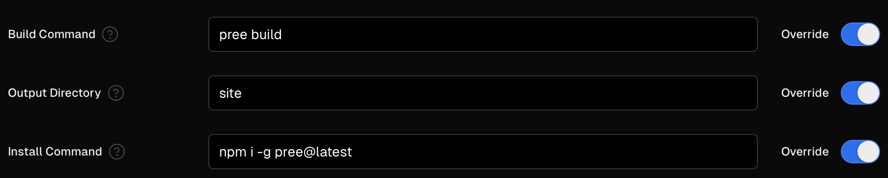

## Deploying Your Website
`pree` simplifies website deployment by generating static files, eliminating the need for specific server setups (thats the benefit of going no-build in general). This allows for deployment on any platform that supports static file hosting. For efficiency, it's practical to include the build step within your deployment process. Below are guides for integrating `pree` with several common static hosting platforms.
@media (max-width: 800px) {
& {
display: block;
}
}
img {
border-radius: 0;
@media (prefers-color-scheme: dark) {
&:not([no-inv]) {
filter: invert(1);
}
}
}
a {
text-decoration: none !important;
}
article {
border: 1px solid color-mix(in srgb, var(--text-color) 10%, var(--background-color));
address {
margin: .5rem;
img {
width: 32px;
height: 32px;
}
}
[role="toolbar"] {
top: 0; bottom: 0;
display: flex;
flex-direction: column;
justify-content: center;
}
}
---
### GitHub Pages
[GitHub Pages](https://pages.github.com/) is a great choice if your code is hosted on GitHub.
👉 Add a workflow like this for automatic deployment to GitHub Pages on commit.
```yml
# .github/workflows/docs.yml
name: docs
on:
push:
branches:
- main
permissions:
contents: write
jobs:
run:
runs-on: ubuntu-latest
steps:
- name: Checkout
uses: actions/checkout@v2
with:
fetch-depth: 0
- uses: actions/setup-node@v2
with:
node-version: '16'
- name: Install pree
run: npm i -g pree
- name: Build docs
run: pree build
- name: No Jekyll
run: touch docs/.nojekyll
- name: Deploy 🚀
uses: JamesIves/github-pages-deploy-action@v4
with:
folder: site
```
> You must have Github Pages configured on your repository. [Check this guide](https://docs.github.com/en/pages/getting-started-with-github-pages/configuring-a-publishing-source-for-your-github-pages-site) on how to do it.
✨
This website is hosted on GitHub Pages using [a similar workflow](https://github.com/loreanvictor/pree/blob/main/.github/workflows/docs.yml).
---
### Surge
[Surge](https://surge.sh/) is another easy method of deploying a static website.
```bash
pree build docs site # 🏗️ build
```
```bash
surge site --domain https://my-website.surge.sh # 🚀 deploy
```
💡 Surge ignores `.*` and `_*` files by default. Add a [`.surgeignore`](https://surge.sh/help/ignoring-files-and-directories) file to your project to customize this behavior.
🤖 To deploy to Surge from a CI/CD pipeline, you need to provide `SURGE_LOGIN` (your email) and `SURGE_TOKEN` (obtained with `surge token` command) as environment variables. [Check this guide](https://surge.sh/help/integrating-with-travis-ci) for more info.
✨
This website is also [deployed to Surge using this method](https://github.com/loreanvictor/pree/blob/d6c44c9a349dde326654ac9e77a7a7ad7d1c1f75/package.json#L20) ([https://pree.surge.sh](https://pree.surge.sh)).
---
### Vercel
[Vercel](https://vercel.com/) is a popular platform for deploying websites. Unfortunately, its build pipleline has a [known issue](https://pptr.dev/troubleshooting#running-puppeteer-on-aws-lambda) with [Puppeteer](https://pptr.dev), and `pree` uses Puppeteer under the hood, so you need to prebuild the site in another environment like your own machine or within GitHub Actions, before deploying it to Vercel.
Configure your project to build with `pree`. Either go the your Vercel dashboard project setting and set the build configuration similar to the following:

Or, in your Vercel config files, add a config like this:
```json
{
"installCommand": "npm i -g pree@latest",
"buildCommand": "pree build",
"outputDirectory": "site"
}
```
👀
Execute the following to deploy a preview:
```bash
vercel build
```
```bash
vercel deploy --prebuilt
```
🚀
Execute the following to deploy to production:
```bash
vercel build --prod
```
```bash
vercel deploy --prebuilt --prod
```
🤖
To deploy to Vercel from a CI/CD pipeline, you need to provide `VERCEL_ORG_ID`, `VERCEL_PROJECT_ID`, and `VERCEL_TOKEN`. [Read this guide](https://vercel.com/guides/how-can-i-use-github-actions-with-vercel) for more information.
✨
This website is also [deployed to Vercel using this method](https://github.com/loreanvictor/pree/blob/d6c44c9a349dde326654ac9e77a7a7ad7d1c1f75/package.json#L19) ([https://pree-view.vercel.app](https://pree-view.vercel.app)).
---
### Netlify
[Netlify](https://netlify.com) is another popular website hosting service. Similar to [Vercel](deploy.html#vercel), you need to prebuild the site before deploying it to Netlify, as its build pipeline can't run Puppeteer (and hence `pree build`).
```bash
pree build docs site # 🏗️ build
```
```bash
netlify deploy --dir=site --prod # 🚀 deploy
```
😡Netlify ignores `.*` files and there is, apparently, no way around it.
🤖To deploy to Netlify from a CI/CD pipeline, you need to provide `NETLIFY_AUTH_TOKEN` as an environment variable. [Read this guide](https://docs.netlify.com/cli/get-started/#obtain-a-token-in-the-netlify-ui) for more information.
✨
This website is also [deployed to Netlify using this method](https://github.com/loreanvictor/pree/blob/d6c44c9a349dde326654ac9e77a7a7ad7d1c1f75/package.json#L21) ([https://pree-view.netlify.app](https://pree-view.netlify.app)).
 GitHub Pages
GitHub Pages
 Surge
Surge
 Netlify
Netlify